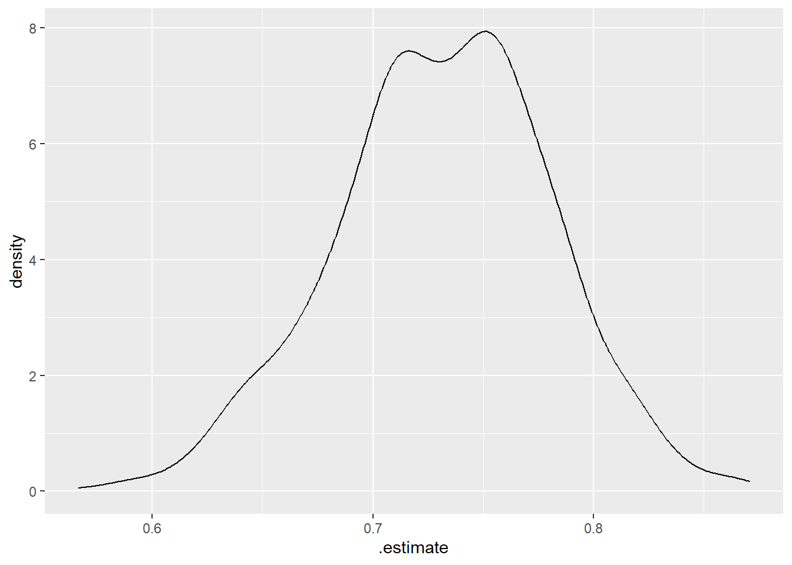

data("aSAH",package = "pROC")
str(aSAH)
## 'data.frame': 113 obs. of 7 variables:
## $ gos6 : Ord.factor w/ 5 levels "1"<"2"<"3"<"4"<..: 5 5 5 5 1 1 4 1 5 4 ...
## $ outcome: Factor w/ 2 levels "Good","Poor": 1 1 1 1 2 2 1 2 1 1 ...
## $ gender : Factor w/ 2 levels "Male","Female": 2 2 2 2 2 1 1 1 2 2 ...
## $ age : int 42 37 42 27 42 48 57 41 49 75 ...
## $ wfns : Ord.factor w/ 5 levels "1"<"2"<"3"<"4"<..: 1 1 1 1 3 2 5 4 1 2 ...
## $ s100b : num 0.13 0.14 0.1 0.04 0.13 0.1 0.47 0.16 0.18 0.1 ...
## $ ndka : num 3.01 8.54 8.09 10.42 17.4 ...24 bootstrap ROC/AUC
今天给大家介绍4种方法实现bootstrap ROC/AUC。
这几种都是通用的方法，包括但不限于单纯二分类数据的bootstrap ROC/AUC及可信区间，模型内部验证/外部验证获取的各种指标的bootstrap可信区间（或ROC/AUC）
在演示前，先说一下这个bootstrap ROC/AUC的思路。首先你要知道什么是bootstrap，然后你要知道在R中如何绘制ROC曲线。
假如是做1000次bootstrap，那就会得到1000个自助集，在每一个自助集都进行1次ROC分析并绘制1条ROC曲线，获取1个AUC值，把这1000条ROC曲线画在一起，就是bootstrap ROC了，通过这1000个AUC就可以计算AUC的置信区间了。
思路清晰，下面就是找工具实现。我选择R。
演示数据使用aSAH数据集，这是一个动脉瘤性蛛网膜下腔出血的数据集，一共113行，7列。其中：
gos6：格拉斯哥量表评分outcome：结果变量gender：性别age：年龄wfns：世界神经外科医师联合会公认的神经学量表评分s100b：生物标志物ndka：生物标志物
24.1 fbroc
先介绍一个最简单的，用fbroc这个包实现，因为你在必应或者谷歌搜索bootstrap ROC in R，前几个结果中就是这个包。
library(fbroc)这个包在使用时需要把结果变量变为逻辑型：
outcome1 <- ifelse(aSAH$outcome == "Good",FALSE,TRUE)然后1行代码即可实现，默认是1000次bootstrap：
set.seed(123)
result.boot <- boot.roc(aSAH$s100b, outcome1)
result.boot
##
## Bootstraped uncached ROC Curve with 41 positive and 72 negative samples.
##
## The AUC is 0.73.
##
## 1000 bootstrap samples will be calculated.
## The results use up 0 MB of memory.获取1000次bootstrap AUC的可信区间，还同时给出了标准误：
set.seed(123)
perf(result.boot, "auc", conf.level = 0.95)
##
##
## Bootstrapped ROC performance metric
##
## Metric: AUC
## Bootstrap replicates: 1000
## Observed: 0.731
## Std. Error: 0.052
## 95% confidence interval:
## 0.625 0.824把这1000条ROC曲线画在一起，就得到bootstrap ROC了：
plot(result.boot)
这个是我目前找到的最简单的方法。
24.2 tidyverse
后面的方法就是根据开头说的思路，一步一步的实现了。
先说个tidy的方法，借助tidyverse和tidymodels实现。
library(yardstick)
library(rsample)
library(tidyverse)先说下如何在tidymodels中绘制ROC曲线，详情可参考：tidymodels-yardstick：衡量模型性能
在tidymodels中画一条ROC曲线非常简单，首先是计算画图需要的数据：
roc_data <- roc_curve(aSAH, outcome, s100b,event_level = "second")
roc_data
## # A tibble: 52 × 3
## .threshold specificity sensitivity
## <dbl> <dbl> <dbl>
## 1 -Inf 0 1
## 2 0.03 0 1
## 3 0.04 0 0.976
## 4 0.05 0.0694 0.976
## 5 0.06 0.111 0.976
## 6 0.07 0.139 0.976
## 7 0.08 0.222 0.902
## 8 0.09 0.306 0.878
## 9 0.1 0.389 0.829
## 10 0.11 0.486 0.780
## # ℹ 42 more rows然后是画图：
autoplot(roc_data)
接下来只要使用bootstrap生成1000个自助集就可以很方便的绘制1000条ROC曲线了。
生成1000个自助集：
set.seed(123)
asb <- bootstraps(aSAH, times = 1000)
asb
## # Bootstrap sampling
## # A tibble: 1,000 × 2
## splits id
## <list> <chr>
## 1 <split [113/44]> Bootstrap0001
## 2 <split [113/43]> Bootstrap0002
## 3 <split [113/47]> Bootstrap0003
## 4 <split [113/41]> Bootstrap0004
## 5 <split [113/37]> Bootstrap0005
## 6 <split [113/37]> Bootstrap0006
## 7 <split [113/39]> Bootstrap0007
## 8 <split [113/38]> Bootstrap0008
## 9 <split [113/33]> Bootstrap0009
## 10 <split [113/42]> Bootstrap0010
## # ℹ 990 more rows定义一个函数，获取自助集：这是tidymodels中的常见操作，可参考：tidymodels数据划分
ff <- function(split){analysis(split)}下面就是提取1000个自助集的数据，对每个自助集进行1次ROC分析，以获取画图数据：
plot_data <- asb %>%
mutate(boot_data = map(splits, ff)) %>%
unnest(boot_data) %>%
group_by(id) %>%
roc_curve(outcome, s100b,event_level = "second")
dim(plot_data)
## [1] 40007 4
head(plot_data)
## # A tibble: 6 × 4
## # Groups: id [1]
## id .threshold specificity sensitivity
## <chr> <dbl> <dbl> <dbl>
## 1 Bootstrap0001 -Inf 0 1
## 2 Bootstrap0001 0.04 0 1
## 3 Bootstrap0001 0.05 0.0779 1
## 4 Bootstrap0001 0.06 0.143 1
## 5 Bootstrap0001 0.07 0.195 1
## 6 Bootstrap0001 0.08 0.312 0.944最后把1000条ROC曲线画在一起即可：也就是大家需要的bootstrap ROC：
ggplot()+
# 自助集的ROC曲线，共1000条
geom_path(data = plot_data,
mapping=aes(1-specificity, sensitivity,group=id),color = "grey")+
# 原始数据的ROC曲线
geom_path(data = roc_data, mapping = aes(1-specificity, sensitivity),
color="blue", linewidth=1.5)+
theme_bw()
由于我们已经进行了1000次ROC分析，那自然就可以获得1000个AUC，所以根据这1000个AUC，就可以计算均值、标准差、标准误、可信区间。
先获取1000个AUC：
boot_auc <- asb %>%
mutate(boot_data = map(splits, ff)) %>%
unnest(boot_data) %>%
group_by(id) %>%
roc_auc(outcome, s100b,event_level = "second")
#boot_auc
dim(boot_auc)
## [1] 1000 4
head(boot_auc)
## # A tibble: 6 × 4
## id .metric .estimator .estimate
## <chr> <chr> <chr> <dbl>
## 1 Bootstrap0001 roc_auc binary 0.799
## 2 Bootstrap0002 roc_auc binary 0.721
## 3 Bootstrap0003 roc_auc binary 0.774
## 4 Bootstrap0004 roc_auc binary 0.707
## 5 Bootstrap0005 roc_auc binary 0.743
## 6 Bootstrap0006 roc_auc binary 0.701这1000个AUC基本接近正态分布：
ggplot(boot_auc, aes(x=.estimate))+
geom_density()
计算置信区间，公式如下（数学知识和统计知识，网络搜索或者看课本都可以）：
可信区间下限 = 均值 - z * 标准误
可信区间上限 = 均值 + z * 标准误
先计算标准误：
sample_mean <- mean(boot_auc$.estimate)
sample_mean
## [1] 0.7315554
sample_size <- nrow(boot_auc)
standard_d <- sd(boot_auc$.estimate)
se <- standard_d/sqrt(sample_size)
se
## [1] 0.001544964计算置信区间：
conf_low <- sample_mean - 1.96 * se
conf_low
## [1] 0.7285273
conf_high <- sample_mean + 1.96 * se
conf_high
## [1] 0.734583624.3 base R
和tidy的方法没有本质区别，只是实现方式使用base R语法而已。这让我想起了某个外国网友对R的评论：目前很多人不是纠结于用R还是用Python，而是纠结于用base R还是tidy R。base R和tidy R真是太割裂了。
先进行1次bootstrap（获取样本编号）看看效果：
set.seed(123)
bootset <- sample(nrow(aSAH), size = nrow(aSAH), replace = T)
bootset
## [1] 31 79 51 14 67 42 50 43 101 14 25 90 91 69 91 57 92 9
## [19] 93 99 72 26 7 42 9 83 36 78 81 43 103 76 15 32 106 109
## [37] 7 9 41 74 23 27 60 53 7 53 27 96 38 89 34 93 69 72
## [55] 76 63 13 82 97 91 25 38 21 79 41 47 90 60 95 16 94 6
## [73] 107 72 86 86 39 31 112 81 50 113 34 4 13 69 25 52 22 89
## [91] 32 110 25 87 35 40 112 30 12 31 110 30 64 99 14 93 96 71
## [109] 67 23 79 85 37然后定义一个函数，获取每次的自助集：
get_bootset <- function(data){
boot_index <- sample(nrow(data), size = nrow(data), replace = T)
bootset <- data[boot_index,]
return(bootset)
}
#set.seed(123)
#get_bootset(aSAH)使用bootstrap获取1000个自助集，通过for循环实现：
# 每次结果都不一样
bootsets <- list()
for(i in 1:1000){
bootsets[[i]] <- get_bootset(aSAH)
}
length(bootsets)
## [1] 1000对每一个自助集进行1次ROC分析，通过for循环实现：
library(pROC)
rocs <- list()
for(i in 1:1000){
rocs[[i]] <- pROC::roc(bootsets[[i]][,"outcome"], bootsets[[i]][,"s100b"],
quiet=T)
}画1000条ROC曲线，还是通过for循环实现：
# 提供一个画布
plot(roc(aSAH$outcome, aSAH$s100b),col="blue")
# 画1000条ROC曲线
for(i in 1:1000){
lines.roc(rocs[[i]],col="grey")
}
# 画完1000条把原来的挡住了，重新画一条
lines.roc(roc(aSAH$outcome, aSAH$s100b),col="blue")
然后是计算1000个AUC的置信区间，和tidy的方法一样的。
计算1000个AUC：
aucs <- list()
for(i in 1:1000){
aucs[[i]] <- auc(pROC::roc(bootsets[[i]][,"outcome"],bootsets[[i]][,"s100b"],
quiet=T))
}
aucs <- unlist(aucs)计算可信区间：
sample_mean <- mean(aucs)
sample_mean
## [1] 0.7312995
sample_size <- length(aucs)
standard_d <- sd(aucs)
se <- standard_d/sqrt(sample_size)
se
## [1] 0.00156935695%的可信区间，参考课本或者这个知乎的解释
conf_low <- sample_mean - 1.96 * se
conf_low
## [1] 0.7282235
conf_high <- sample_mean + 1.96 * se
conf_high
## [1] 0.7343754这种方法由于我没有在每次重抽样时设定种子数，导致结果是不可重复的哈，每次都不太一样~
24.4 boot
boot是专门做重抽样的经典R包，在《R语言实战》一书中有详细介绍。
通过这个包也可以计算bootstrap AUC的置信区间，但是这种方法只能计算指标，不能画ROC曲线。
library(boot)
library(pROC)定义一个函数，提取AUC：
# boot的使用方式很奇怪
get_auc <- function(data, ind, outcome, predictor){
d = data[ind,] #这句必须加
au <- as.numeric(auc(pROC::roc(d[,outcome], d[,predictor],quiet=T)))
au
}
get_auc(aSAH, outcome="outcome",predictor="s100b")
## [1] 0.7313686提供给boot使用即可：
set.seed(123)
ba <- boot(aSAH, get_auc, R = 1000,
outcome="outcome",predictor="s100b")
ba
##
## ORDINARY NONPARAMETRIC BOOTSTRAP
##
##
## Call:
## boot(data = aSAH, statistic = get_auc, R = 1000, outcome = "outcome",
## predictor = "s100b")
##
##
## Bootstrap Statistics :
## original bias std. error
## t1* 0.7313686 0.0001084232 0.05365581结果给出了原始的AUC，以及1000次bootstrap得到的AUC的标准误。
可以对这个结果画个图看看这1000个AUC的分布：
plot(ba)
获取这1000个AUC的置信区间，默认会给出95%的置信区间，并包含4种计算方法的结果：
boot.ci(ba)
## BOOTSTRAP CONFIDENCE INTERVAL CALCULATIONS
## Based on 1000 bootstrap replicates
##
## CALL :
## boot.ci(boot.out = ba)
##
## Intervals :
## Level Normal Basic
## 95% ( 0.6261, 0.8364 ) ( 0.6314, 0.8479 )
##
## Level Percentile BCa
## 95% ( 0.6148, 0.8313 ) ( 0.6048, 0.8228 )
## Calculations and Intervals on Original Scale4种计算方法的置信区间都有了。
OVER！